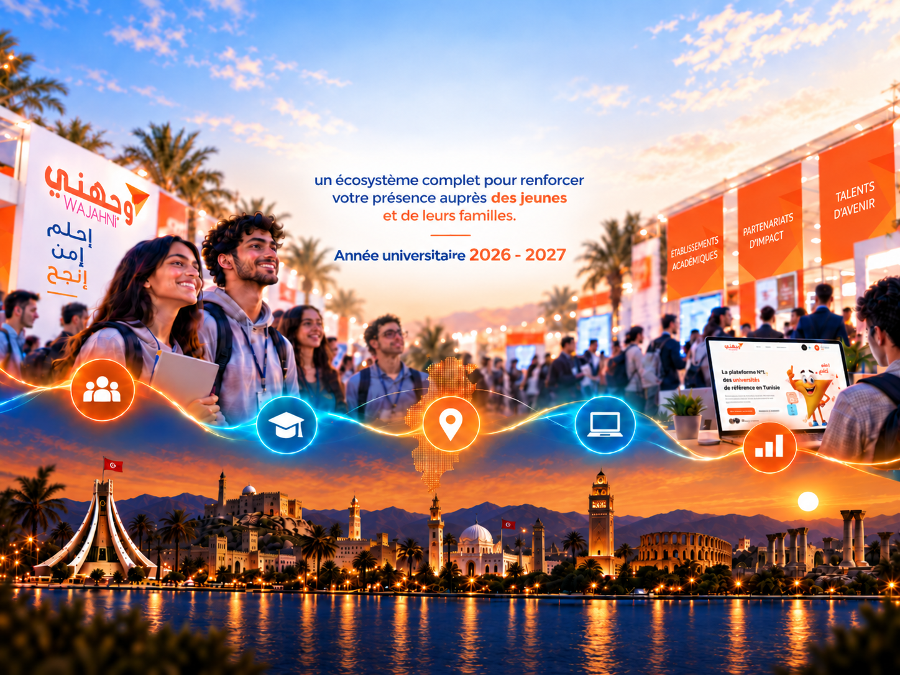
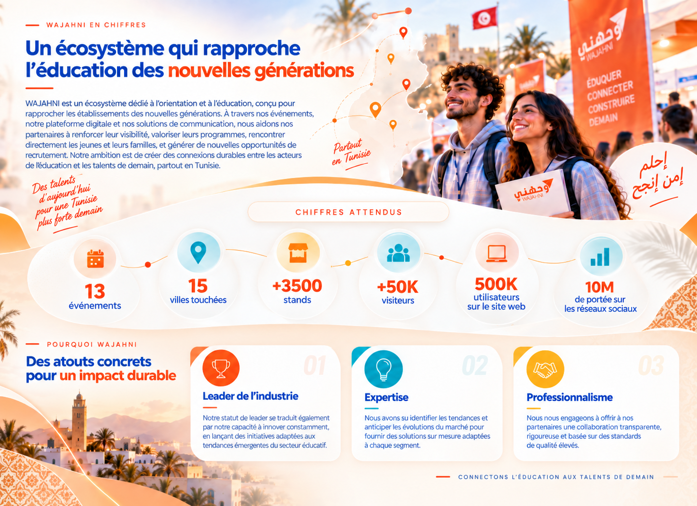
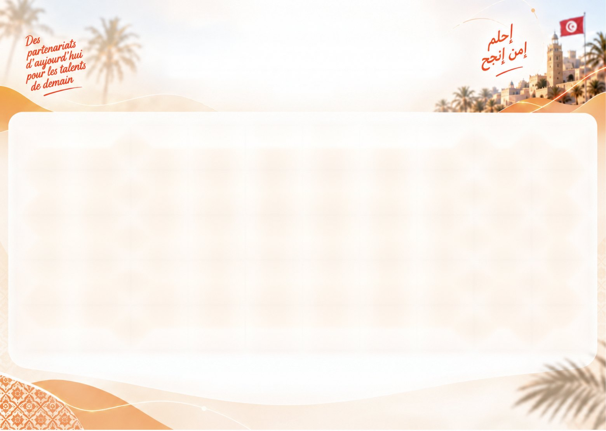
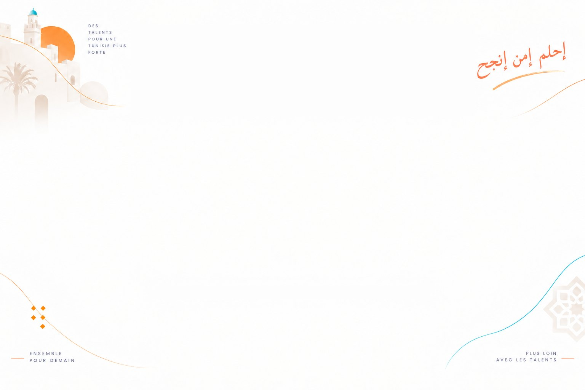

WAJAHNI — un écosystème complet pour renforcer votre présence auprès des jeunes et de leurs familles

Découvrir nos Services →

Nos partenaires
Ils nous font confiance
Un réseau de partenaires qui accompagne WAJAHNI chaque année.
Ensemble pour une Tunisie des talents

Témoignages partenaires
Ils partagent leur expérience
avec WAJAHNI
Des retours authentiques de nos partenaires qui nous font confiance chaque année.
Et bien d’autres partenaires nous font confiance
Influenceurs & partenaires médiatiques
Ils font rayonner WAJAHNI
auprès des jeunes
Les créateurs de contenu et les médias qui portent la voix de WAJAHNI à chaque édition.
Et nos partenaires médiatiques
إحلم إمن إنجح
Découvrez tous nos services et événements
Des solutions complètes pour accompagner les jeunes, les établissements et les entreprises
à chaque étape de leur parcours.